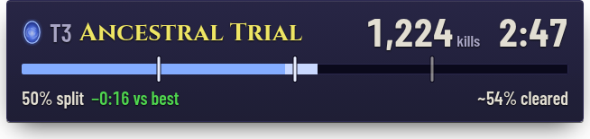
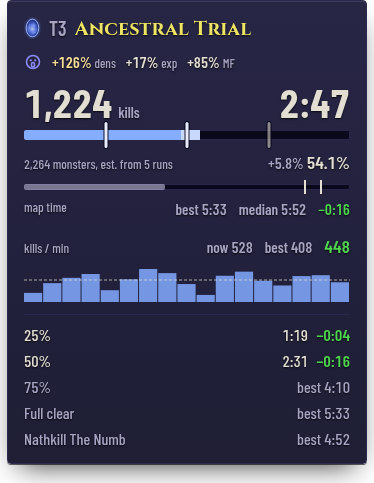
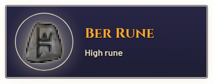
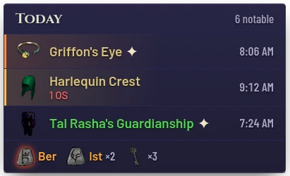
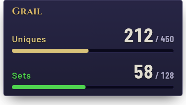
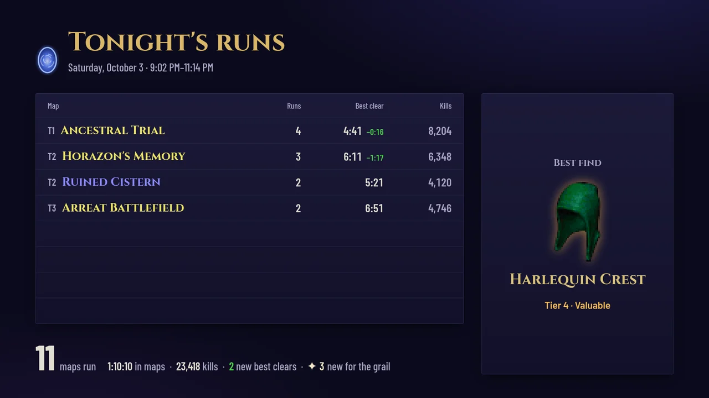

Overlays
Overlays are transparent pages you add to OBS as Browser Sources. They come in one look, made to read at stream size, and update on their own while you play.
In OBS: Sources → + → Browser, paste the address and enter the size next to it. The Stream page (key 7) builds each address with its options, shows a preview and has a Copy button. Overlays work only while Horazon is running.

Run tracker
For viewers: the map, the clock and kills large, the share of the map cleared, and the latest split against your best. It shows while a map run is open and hides between maps.
http://127.0.0.1:8080/killcounter?view=broadcast 680 × 184

Run tracker, pilot version
For you: everything the run is measured by. Kill rate, map time against your best and median, every split and the boss.
The desktop app shows this one above the game: tray → Map kill counter overlay, and Move kill counter… to place it.
http://127.0.0.1:8080/killcounter 392 × 520

Moments
Empty until the run gives something: a drop in your tiers, a new grail find or a Vex+ rune, a split beaten, a new best clear, the boss down. Each one opens, holds six seconds and closes.
http://127.0.0.1:8080/overlay/moments 680 × 208

Drop feed
Each day's best drops; new drops slide in live, and a new grail find gets a sparkle. Grail progress itself is the grail counter's job. The Stream page sets how many drops, the lowest rune shown, the layout and the size, and gives the size to enter in OBS.
http://127.0.0.1:8080/overlay size on the Stream page

Grail counter
Uniques and sets found, each with its bar in the game's quality colour. All time or the current season.
http://127.0.0.1:8080/overlay/grail 392 × 244

Session scoreboard
A full-screen scene for a break or the end of a stream: tonight's maps as a board (fastest first, new bests in green), the best find, and the night's totals.
http://127.0.0.1:8080/overlay/session 1920 × 1080
The addresses use port 8080. If you changed the port, they change with it; the Stream page always shows the right ones.